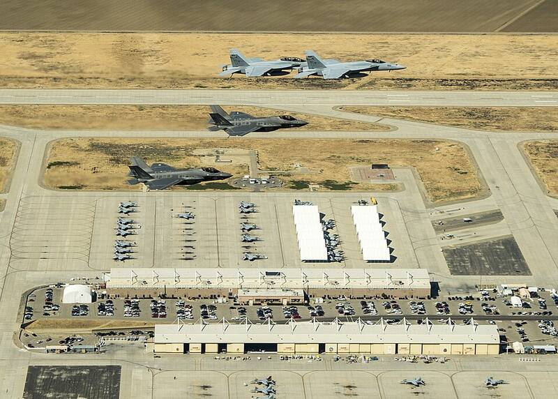

NAS Lemoore California California · Military base · 36.333°N, 119.952°W F-35C fighters over Naval Air Station Lemoore, 2015. Photo: Lt. Cmdr. Darin Russell, U.S. Navy, Public domain (source) The Navy's largest master jet base. 1 Open in the interactive Watcher Sources Naval Air Station Lemoore Wikipedia